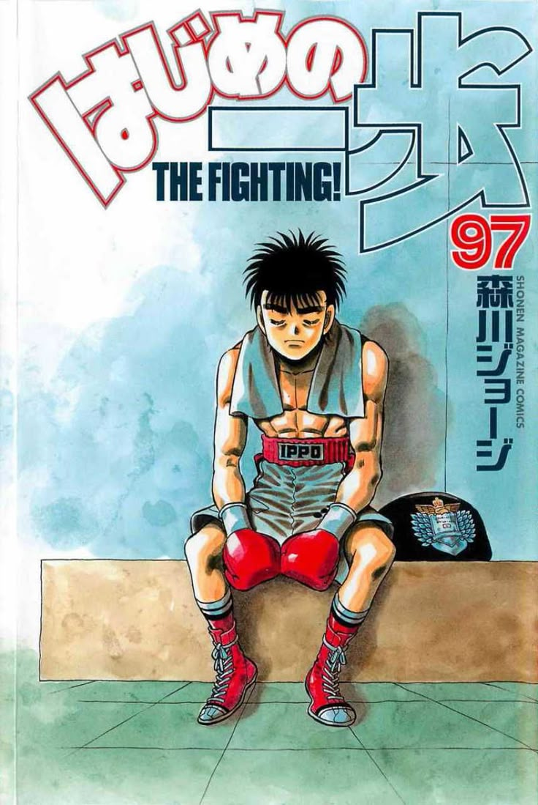
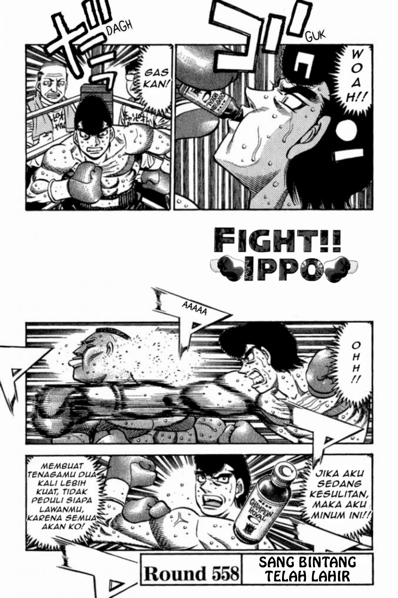

Hajime no Ippo
by George Morikawa
Synopsis
Ippo Makunouchi is a shy high school student who helps his mother run their family fishing business. After being bullied, he is rescued by professional boxer Mamoru Takamura, who introduces him to the world of boxing. Inspired to become stronger and discover what it means to be strong, Ippo begins training at the Kamogawa Boxing Gym, embarking on a challenging journey filled with intense matches, fierce rivals, friendship, and personal growth.
Chapter 1

Ippo Makunouchi is a hardworking student who spends much of his time helping his mother with their fishing business. Because of his quiet personality, he becomes a frequent target of bullies and struggles to stand up for himself.
One day, professional boxer Mamoru Takamura intervenes when Ippo is being bullied. After witnessing Takamura's boxing skills, Ippo becomes fascinated by the sport and begins to wonder what it truly means to be strong, setting him on the path toward becoming a boxer.
— End of chapter —